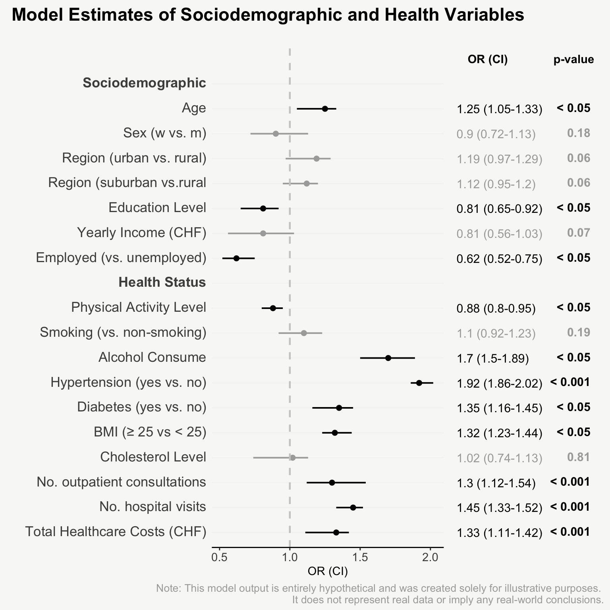
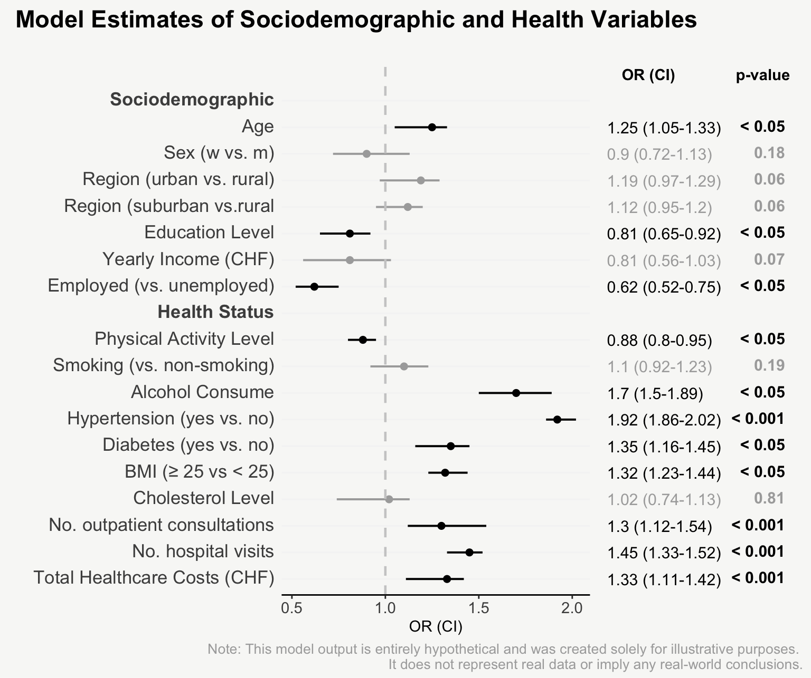

mainPlot <- ggplot()
rightPlot <- ggplot()
mainPlot + rightPlot + plot_layout(widths = c(1.8,1.2))From Boring Tables to Beautiful Plots
For presenting model estimates (e.g., odds ratios and confidence intervals with corresponding p-values) in reports or publications, I find figures are far more helpful than tables.
The following post shows how to transform a model output into a nicely designed plot, step by step. The example is based on a hypothetical model output that includes odds ratios of sociodemographic and health variables on some binary outcome.
| Model Estimates of Sociodemographic and Health Variables |
||||
| Odds Ratios (OR), Confidence Intervals (CI), p-values | ||||
| variable | OR | CI_lower | CI_upper | p_value |
|---|---|---|---|---|
| age | 1.25 | 1.05 | 1.33 | 0.01100 |
| sex_w_vs_m | 0.90 | 0.72 | 1.13 | 0.18000 |
| region_urban_vs_rural | 1.19 | 0.97 | 1.29 | 0.06200 |
| region_suburban_vs_rural | 1.12 | 0.95 | 1.20 | 0.06200 |
| education | 0.81 | 0.65 | 0.92 | 0.00900 |
| income | 0.81 | 0.56 | 1.03 | 0.07300 |
| employment_yes_vs_no | 0.62 | 0.52 | 0.75 | 0.00200 |
| smoking_yes_vs_no | 1.10 | 0.92 | 1.23 | 0.19000 |
| alcohol | 1.70 | 1.50 | 1.89 | 0.00100 |
| hypertension_yes_vs_no | 1.92 | 1.86 | 2.02 | 0.00010 |
| diabetes | 1.35 | 1.16 | 1.45 | 0.00400 |
| BMI | 1.32 | 1.23 | 1.44 | 0.01300 |
| physical_activity | 0.88 | 0.80 | 0.95 | 0.02100 |
| cholesterol | 1.02 | 0.74 | 1.13 | 0.81000 |
| total_healthcare_costs | 1.33 | 1.11 | 1.42 | 0.00030 |
| number_hospital_visits | 1.45 | 1.33 | 1.52 | 0.00001 |
| number_outpatient_consultations | 1.30 | 1.12 | 1.54 | 0.00070 |
| Note: This model output is entirely hypothetical and was created solely for illustrative purposes. It does not represent real data or imply any real-world conclusions. | ||||

Note I: The scrollytelling framework is made using the closeread Quarto extension. The code highlighting is done using the line-highlight Quarto extension, which allows to highlight specific lines of code. For table formatting {gt} is used and for plotting {ggplot2}.
Note II: You’ll find the complete code for both generating the hypothetical model data and creating the visualization at the end of this post. The data preparation steps are not broken down individually, but are only found consolidated in the final code section.
Now let`s start building up the plot step by step.
That’s it! Now we have an informative plot of model estimates with odds ratios, confidence intervals, and p-values - all nicely formatted and aligned.
Here you find the complete code:
R code: data
# library(R.utils)
# library(tidyverse)
model_data <- function() {
# ----------------------------- generate data ----------------------------------
data.original <- data.frame(
variable = c(
"age",
"sex_w_vs_m",
"region_urban_vs_rural",
"region_suburban_vs_rural",
"education",
"income",
"employment_yes_vs_no",
"smoking_yes_vs_no",
"alcohol",
"hypertension_yes_vs_no",
"diabetes",
"BMI",
"physical_activity",
"cholesterol",
"total_healthcare_costs",
"number_hospital_visits",
"number_outpatient_consultations"
),
OR = c(
1.25, 0.9, 1.19, 1.12, 0.81, 0.81, 0.62, 1.1,
1.70, 1.92, 1.35, 1.32, 0.88, 1.02, 1.33,
1.45, 1.30
),
CI_lower = c(
1.05, 0.72, 0.97, 0.95, 0.65, 0.56, 0.52, 0.92,
1.50, 1.86, 1.16, 1.23, 0.80, 0.74, 1.11,
1.33, 1.12
),
CI_upper = c(
1.33, 1.13, 1.29, 1.20, 0.92, 1.03, 0.75, 1.23,
1.89, 2.02, 1.45, 1.44, 0.95, 1.13, 1.42,
1.52, 1.54
),
p_value = c(
0.011, 0.18, 0.062, 0.062, 0.009, 0.073, 0.002, 0.19,
0.001, 0.0001, 0.004, 0.013, 0.021, 0.81, 0.0003,
0.00001, 0.0007
))
# ------------------------ add plot specific variables -------------------------
data.original <-
data.original |>
mutate(
type = c(rep("Sociodemographic", 7),
rep("Health Status", 10)),
OR_CI = paste0(round(OR, 2), ' (',
round(CI_lower, 2), '-', round(CI_upper, 2),
')'),
p_value_sign = ifelse(p_value < 0.05, TRUE, FALSE),
p_value_cat = case_when(p_value < 0.001 ~ '< 0.001',
p_value < 0.05 ~ '< 0.05',
TRUE ~ as.character(round(p_value, 2))
)
)
# ----------------------------- order variables --------------------------------
data.ordered <- data.original |>
mutate(variable = factor(variable,
levels = c("age", "sex_w_vs_m",
"region_urban_vs_rural",
"region_suburban_vs_rural",
"education",
"income",
"employment_yes_vs_no",
"physical_activity",
"smoking_yes_vs_no",
"alcohol",
"hypertension_yes_vs_no",
"diabetes",
"BMI",
"cholesterol",
"number_outpatient_consultations",
"number_hospital_visits",
"total_healthcare_costs"),
labels = c("Age", "Sex (w vs. m)",
"Region (urban vs. rural)",
"Region (suburban vs.rural",
"Education Level",
"Yearly Income (CHF)",
"Employed (vs. unemployed)",
"Physical Activity Level",
"Smoking (vs. non-smoking)",
"Alcohol Consume",
"Hypertension (yes vs. no)",
"Diabetes (yes vs. no)",
"BMI (≥ 25 vs < 25)",
"Cholesterol Level",
"No. outpatient consultations",
"No. hospital visits",
"Total Healthcare Costs (CHF)")
)
)
# ----------------------------- add subtitles ----------------------------------
orig_levels <- levels(data.ordered$variable)
new_levels <- insert(orig_levels, ats = c(1, 8),
values = c("**Sociodemographic**", "**Health Status**"))
data <- data.ordered |>
group_by(type) |>
group_modify(~ add_row(.x, .before = 0)) |>
ungroup() |>
mutate(variable = ifelse(is.na(variable),
paste0("**",type, "**"), as.character(variable))) |>
mutate(variable = factor(variable,
levels = new_levels,
labels = new_levels
)
)
# ----------------------------- return data ------------------------------------
return(
list(
data.final = data,
data.original = data.original,
data.ordered = data.ordered
)
)
}
# Example usage
# data <- model_data()$data.finalR code: plot
# library(ggplot2)
# library(patchwork)
# library(ggtext)
# library(tidyverse)
model_plot <- function(data){
mainPlot <- # -----------------------------------------------------------------
ggplot(data, aes(y = fct_rev(variable), x = OR, color = p_value_sign)) +
geom_point(size=2, show.legend = F) +
geom_errorbarh(aes(xmin=`CI_lower`, xmax=`CI_upper`),
height = 0.0, size = 0.70) +
geom_vline(aes(xintercept = 1),
color = 'grey80', lty = 2, size = 0.8) +
scale_color_manual(values = c("#aaaaaa", "black")) +
coord_cartesian(ylim = c(1, dim(data)[1]+1)) +
labs(x = 'OR (CI)', y = '') +
theme_classic() +
theme(legend.position = 'none',
axis.line.y = element_blank(),
axis.ticks.y = element_blank(),
axis.text.y = ggtext::element_markdown(size = 13),
axis.text.x = element_text(size = 11),
panel.grid.minor.y = element_blank(),
panel.grid.major.y = element_line(color = '#F5F5F5'),
panel.background = element_rect(fill = "#f8f8f6", color = NA),
plot.background = element_rect(fill = "#f8f8f6", color = NA))
rightPlot <- # -----------------------------------------------------------------
ggplot(data, aes(y = fct_rev(variable))) +
geom_text(aes(x = 0, label = OR_CI, color = p_value_sign),
size = 4, hjust = 0) +
geom_richtext(aes(x = 0.5,
label = ifelse(is.na(p_value_cat), NA,
paste0('**', p_value_cat, '**')),
label.colour = NA, color = p_value_sign),
fill = NA, size = 4, hjust = 1) +
annotate('text', x = 0.04, y = dim(data)[1]+1,
label = "OR (CI)", hjust = 0, fontface = "bold") +
annotate('text', x = 0.5, y = dim(data)[1]+1,
label = "p-value", hjust = 1, fontface = "bold") +
scale_color_manual(values = c("#aaaaaa", "black")) +
coord_cartesian(ylim = c(1, dim(data)[1]+1), xlim = c(0, 0.51)) +
theme_void() +
theme(legend.position = 'none')
# ----------------------- combined plots & annotations -------------------------
mainPlot + rightPlot + plot_layout(widths = c(1.8,1.2)) +
plot_annotation(
title = 'Model Estimates of Sociodemographic and Health Variables',
subtitle = '',
caption = 'Note: This model output is entirely hypothetical and was created solely for illustrative purposes.
It does not represent real data or imply any real-world conclusions.',
theme = theme(plot.title = element_text(size = 17, face = "bold", hjust = 0),
plot.subtitle = element_text(size = 16, hjust = 0),
plot.caption = element_text(size = 10, hjust = 1, color = '#aaaaaa'))
)
}
# Example usage:
# model_plot(data = data)